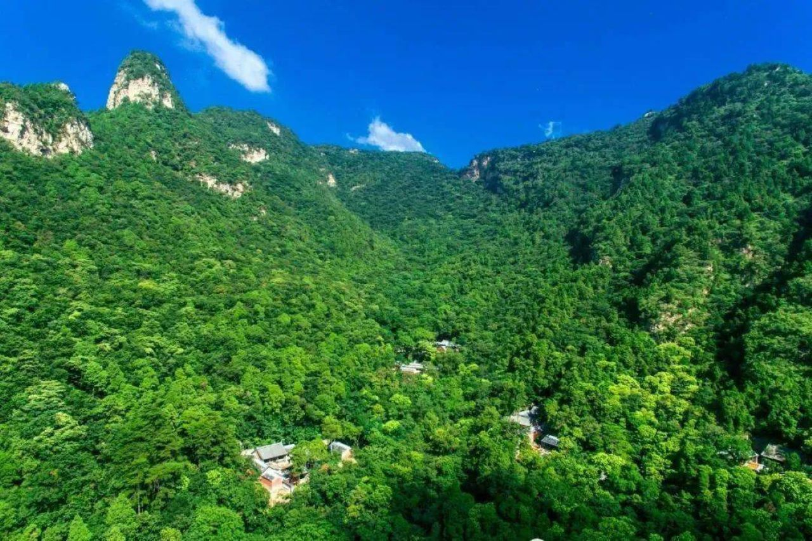
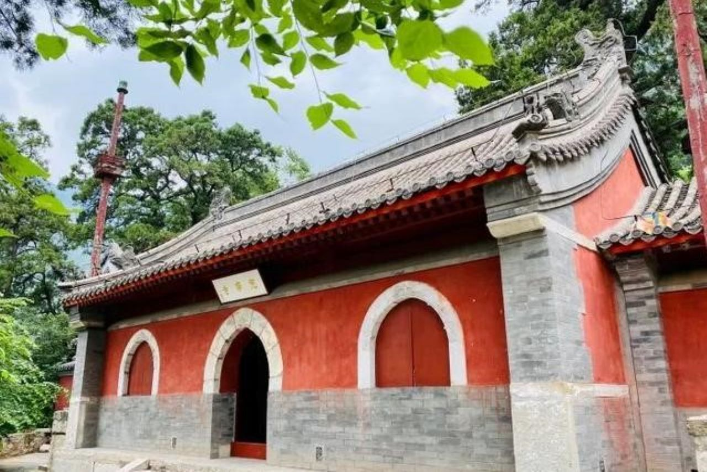
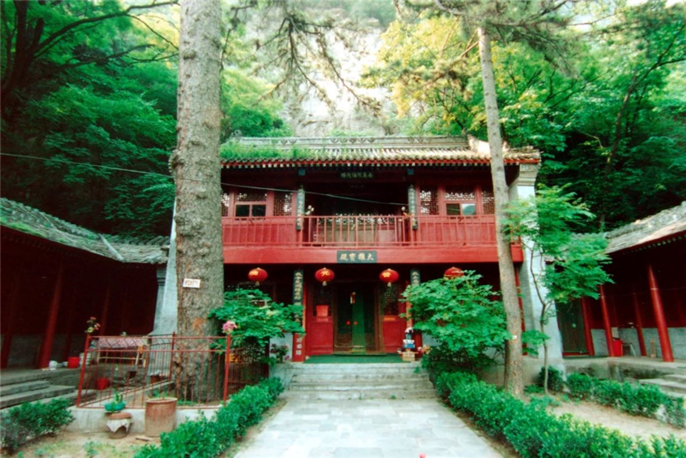
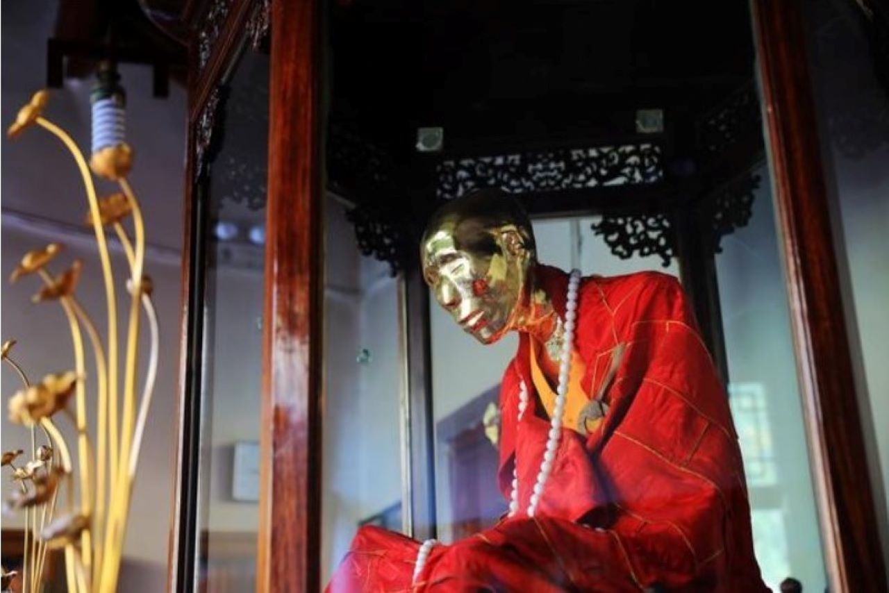
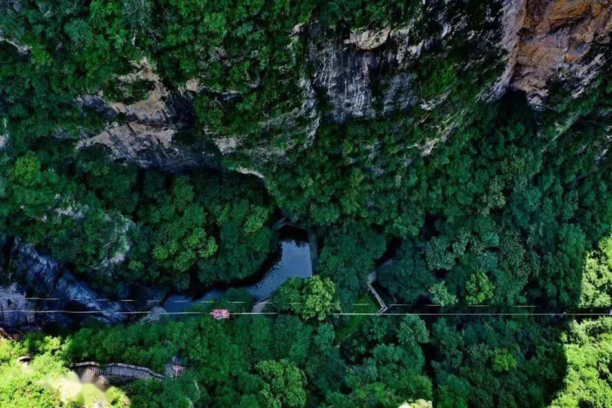

图文一览

九洞十二峰
“幽燕奥室” “南有苏杭，北有上方”
九洞十二峰
上方山森林公园著名景观园内有著名的“九洞十二峰”。九洞是：天王洞、九环洞、延寿洞、阴阳洞、华严洞、金刚洞、朝阳洞、西方洞、云水洞；十二峰是：紫金岭、观音峰、啸月峰、回龙峰、毗卢峰、锦绣峰、象王峰、望海峰、天柱峰、骆驼峰、茶罗峰、狮子峰。

兜率寺
“为山僧禅居修净之所”
兜率寺
北京房山上方山现有有寺庵及遗址 72 座，其中最著名的是始建于隋代的兜率寺 。兜率寺位于房山区上方山，是上方山七十二座茅庵之总方丈所在地。位于西华峰与莲花峰之间，是集山奇、树大、洞深、寺古于一身的著名佛教胜地，素有“南有苏杭、北有上方”之美誉。

藏经阁
“后方有泉，名甘露泉，掬而饮之，极清洌，毛骨为爽”
藏经阁
藏经阁原名广慈庵，民国重修后以为今名。院内一松甚巨，名松树王，院内有《大金中都涿州范阳洪家庄院比邱尼坟塔记》石幢一截，铭文记载：此尼姓杜，固安县赵家务人。又有《大金中都报先寺尼德净坟塔记》石一截，为大定二十五年（1185）无物庵僧裕贤刊刻。

肉身佛
“山不在高，有仙则名”
肉身佛
华严洞是山中“九洞十二峰”之一，开发于东汉光武十年，开山祖师华严慧晟即修炼于此。华严洞内供奉着一尊北方极为少见肉身佛：本如大师。作为佛教华严宗拈花法派第40代祖师，本如大师2005年在华严祖师洞圆寂坐缸。于2009年正月启缸，大师完好无损，安详坐禅如初，皮肤弹性如常。成为我国华北地区近代第一尊全身舍利。

上方山
2022年的夏天